12.4 DQN 확장

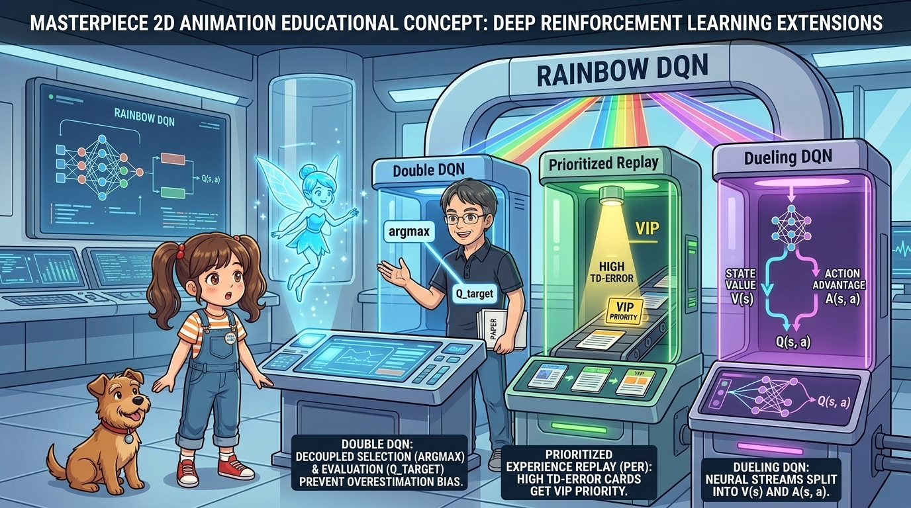
그림 12-4-0 행동 선택과 가치 평가를 분리한 Double DQN 포드, 배울 게 많은 오차 카드를 우선 추출하는 PER 포드, 상태 가치와 행동 이득을 분리한 Dueling DQN 포드를 살펴보는 도로시와 지니, 그리고 이들을 통합한 Rainbow DQN의 위력을 강의하는 교수님DQN은 딥러닝에서 가장 유명한 알고리즘에 속합니다. 그래서 DQN을 발전시킨 기법도 수없이 연구되고 제안되었죠. 이번 절에서는 그중 유명한 기법 세 가지를 소개하겠습니다.
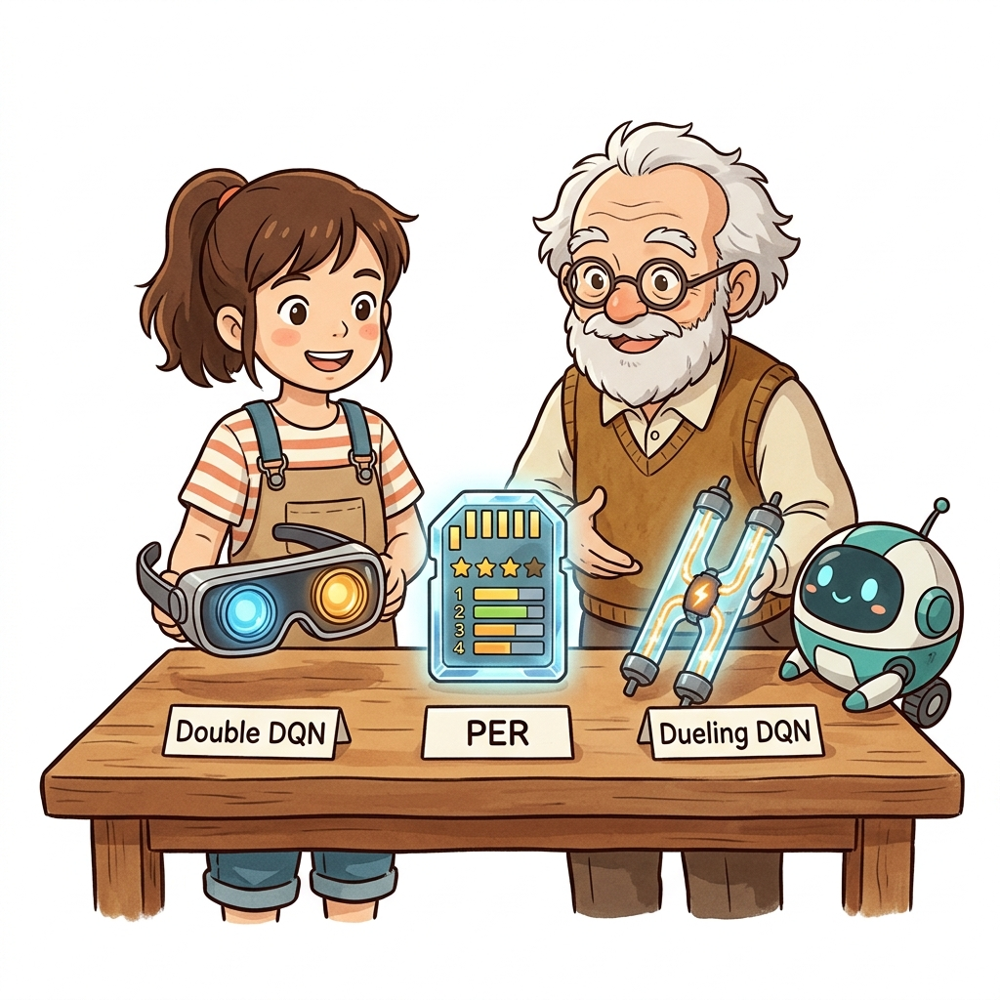
그림 12-4-01 DQN의 3대 확장 계보: Double DQN, 우선순위 경험 재생(PER), Dueling DQN —12.4.1 Double DQN
첫 번째 기법은 Double DQN [13]입니다. 설명에 앞서 DQN을 잠시 복습해보죠. DQN에서는 ‘목표 신경망’이라는 기법을 사용합니다.
 그림 12-4-02 기존 DQN의 목표 신경망 복습: 활성 신경망 θ와 주기적으로 동기화되는 얼어붙은 목표 신경망 θ’
—
원본 신경망 외에 매개변수가 다른 신경망(목표 신경망)을 하나 더 사용하는 것이죠.
그림 12-4-02 기존 DQN의 목표 신경망 복습: 활성 신경망 θ와 주기적으로 동기화되는 얼어붙은 목표 신경망 θ’
—
원본 신경망 외에 매개변수가 다른 신경망(목표 신경망)을 하나 더 사용하는 것이죠.
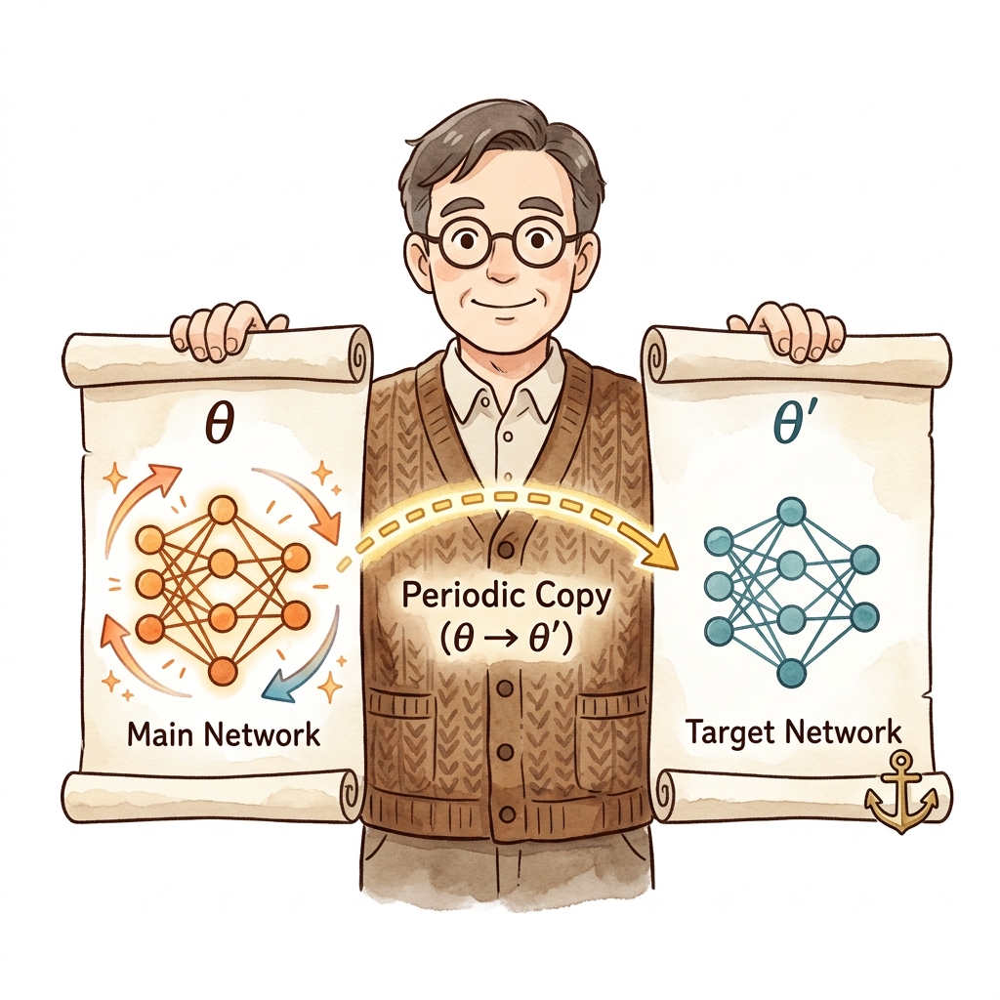
그림 12-4-03 매개변수가 서로 다른 두 신경망: 메인 신경망 θ와 목표 신경망 θ’의 역할 분담 — 두 신경망의 매개변수를 각각 $\theta$와 $\theta’$라고 하고, 두 신경망에 의해 표현되는 Q 함수를 $Q_{\theta}(s, a)$와 $Q_{\theta’}(s, a)$라고 합시다.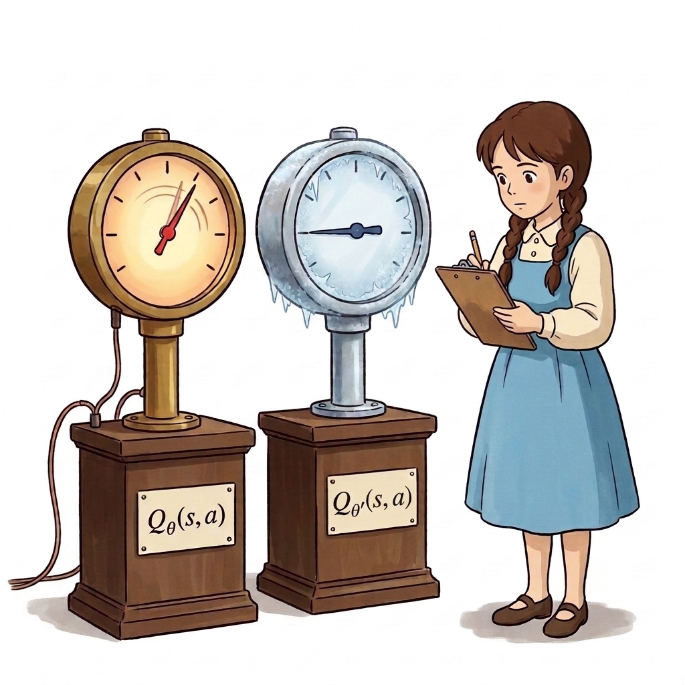
그림 12-4-04 두 신경망이 근사하는 가치 함수 Q_θ(s, a)와 Q_θ’(s, a)의 수식 정의 — 이때 Q 함수 갱신에 사용하는 목표는 다음 식으로 표현됩니다. \[R_t + \gamma \max_a Q_{\theta'}(S_{t+1}, a)\]DQN에서는 $Q_{\theta}(s, a)$의 값을 이 식의 값과 가까워지게 학습하는데 이를 ‘TD 목표’라고 합니다.
 그림 12-4-05 기존 DQN의 TD 목표 공식: R_t + γ max_a Q_θ’(S_{t+1}, a)과 max 연산자
—
여기서 문제가 되는 부분은 $\max_a Q_{\theta’}(S_{t+1}, a)$입니다.
그림 12-4-05 기존 DQN의 TD 목표 공식: R_t + γ max_a Q_θ’(S_{t+1}, a)과 max 연산자
—
여기서 문제가 되는 부분은 $\max_a Q_{\theta’}(S_{t+1}, a)$입니다.
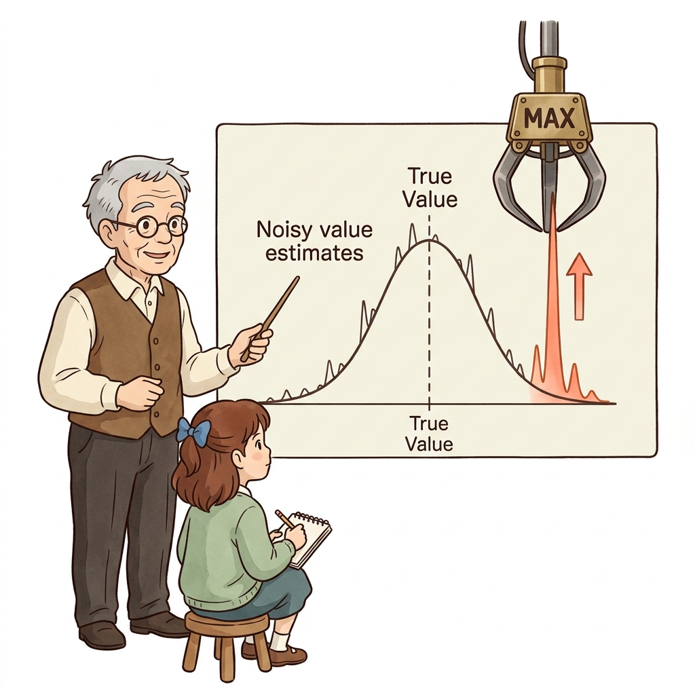
그림 12-4-06 max 연산자의 함정: 오차가 포함된 추정치에서 최댓값을 고를 때 발생하는 양의 편향 — 즉, 오차가 포함된 추정치($Q_{\theta’}$)에 $\max$ 연산을 수행하면 실제 Q 함수를 사용해 계산할 때보다 과대적합되는 문제가 생깁니다.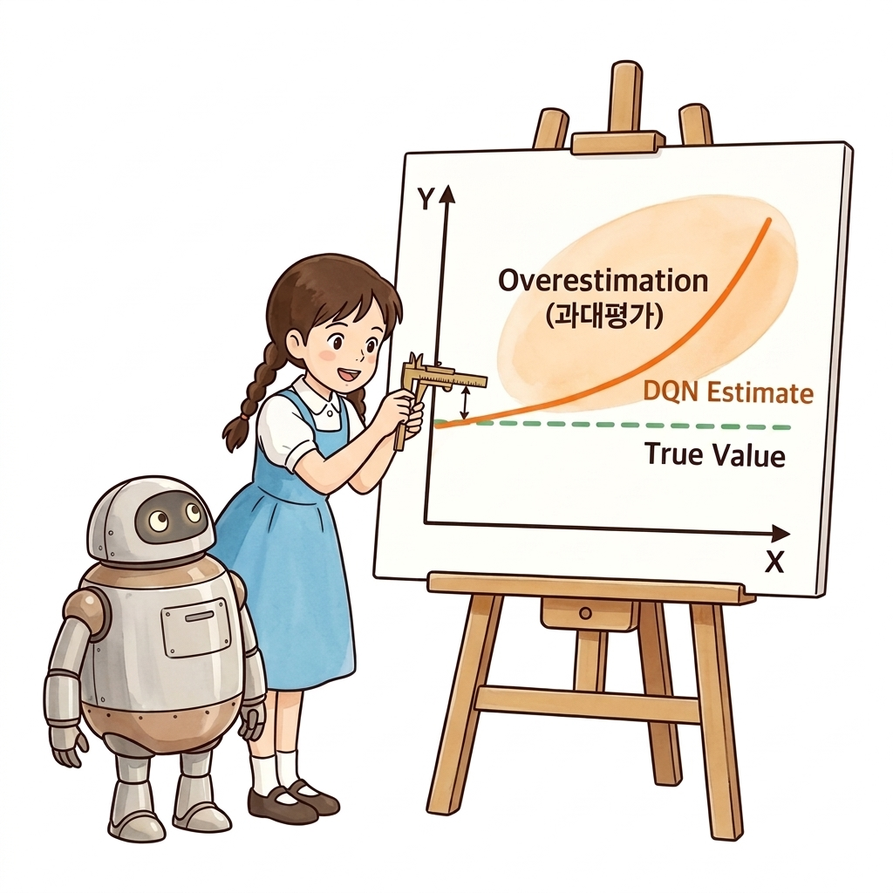
그림 12-4-07 과대평가(Overestimation) 편향: 참값 수평선 대비 비정상적으로 치솟는 DQN 추정치 — 이 문제를 해결한 것이 Double DQN입니다. Double DQN에서는 다음 식을 TD 목표로 삼습니다. \[R_t + \gamma Q_{\theta'}(S_{t+1}, \operatorname{argmax}_a Q_{\theta}(S_{t+1}, a))\]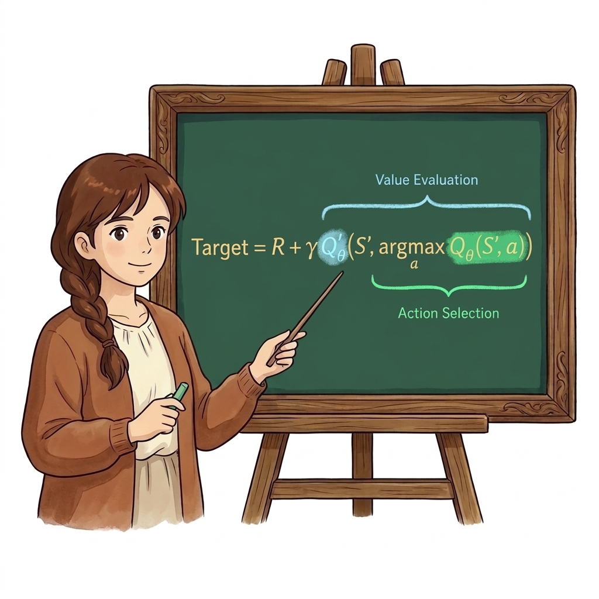
그림 12-4-08 Double DQN의 해법: R_t + γ Q_θ’(S_{t+1}, argmax_a Q_θ(S_{t+1}, a)) 공식 —핵심은 $Q_{\theta}(s, a)$를 사용하여 최대가 되는 행동을 선택하고 실제 값은 $Q_{\theta’}(s, a)$에서 구하는 것입니다.
 그림 12-4-09 행동 선택(θ)과 가치 평가(θ’)의 분리: 편향을 원천 차단하는 듀얼 콘솔
—
그림 12-4-09 행동 선택(θ)과 가치 평가(θ’)의 분리: 편향을 원천 차단하는 듀얼 콘솔
—
이렇게 두 개의 Q 함수를 구분하여 사용하기 때문에 과대적합이 사라지고 학습이 더 안정적으로 이루어집니다.
 그림 12-4-10 편향 해소와 학습 안정화: 과대평가 거품이 꺼지고 참값을 안정적으로 추적하는 수렴
—
그림 12-4-10 편향 해소와 학습 안정화: 과대평가 거품이 꺼지고 참값을 안정적으로 추적하는 수렴
—
과대적합이 구체적으로 무엇인지, 어떤 원리로 해소되는지는 부록 C에서 설명하고 있으니 관심 있는 분은 참고하기 바랍니다.
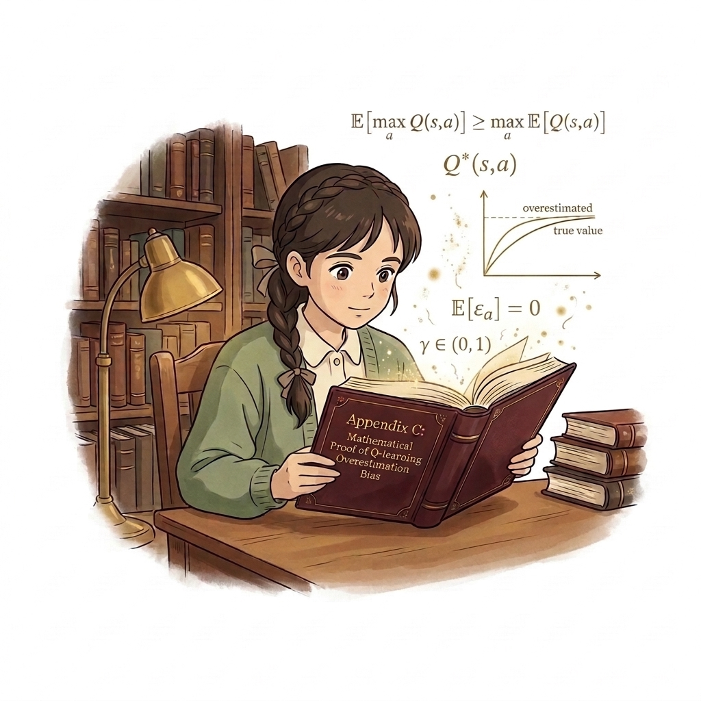
그림 12-4-11 부록 C: 과대평가 편향 해소의 수학적 증명과 탄탄한 이론적 토대 —12.4.2 우선순위 경험 재생(PER)
DQN에서 사용되는 경험 재생은 경험 $E_t = (S_t, A_t, R_t, S_{t+1})$을 버퍼에 저장하고, 학습 시 버퍼에서 경험 데이터를 무작위로 추출하여 사용합니다.
 그림 12-4-12 기존 균등 경험 재생의 한계: 모든 경험이 중요도에 상관없이 동일한 1/N 확률로 추출
—
이를 더욱 발전시킨 것이 우선순위 경험 재생(prioritized experience replay [14], PER)입니다. 경험 데이터를 무작위로 선택하는 대신 이름 그대로 우선순위에 따라 선택되도록 한 기법입니다.
그림 12-4-13 우선순위 경험 재생(PER) 개념: 배울 점이 많은 중요한 경험에 황금 별을 매겨 우선 추출
—
그림 12-4-12 기존 균등 경험 재생의 한계: 모든 경험이 중요도에 상관없이 동일한 1/N 확률로 추출
—
이를 더욱 발전시킨 것이 우선순위 경험 재생(prioritized experience replay [14], PER)입니다. 경험 데이터를 무작위로 선택하는 대신 이름 그대로 우선순위에 따라 선택되도록 한 기법입니다.
그림 12-4-13 우선순위 경험 재생(PER) 개념: 배울 점이 많은 중요한 경험에 황금 별을 매겨 우선 추출
—
그렇다면 경험 데이터의 우선순위는 어떻게 정할까요?
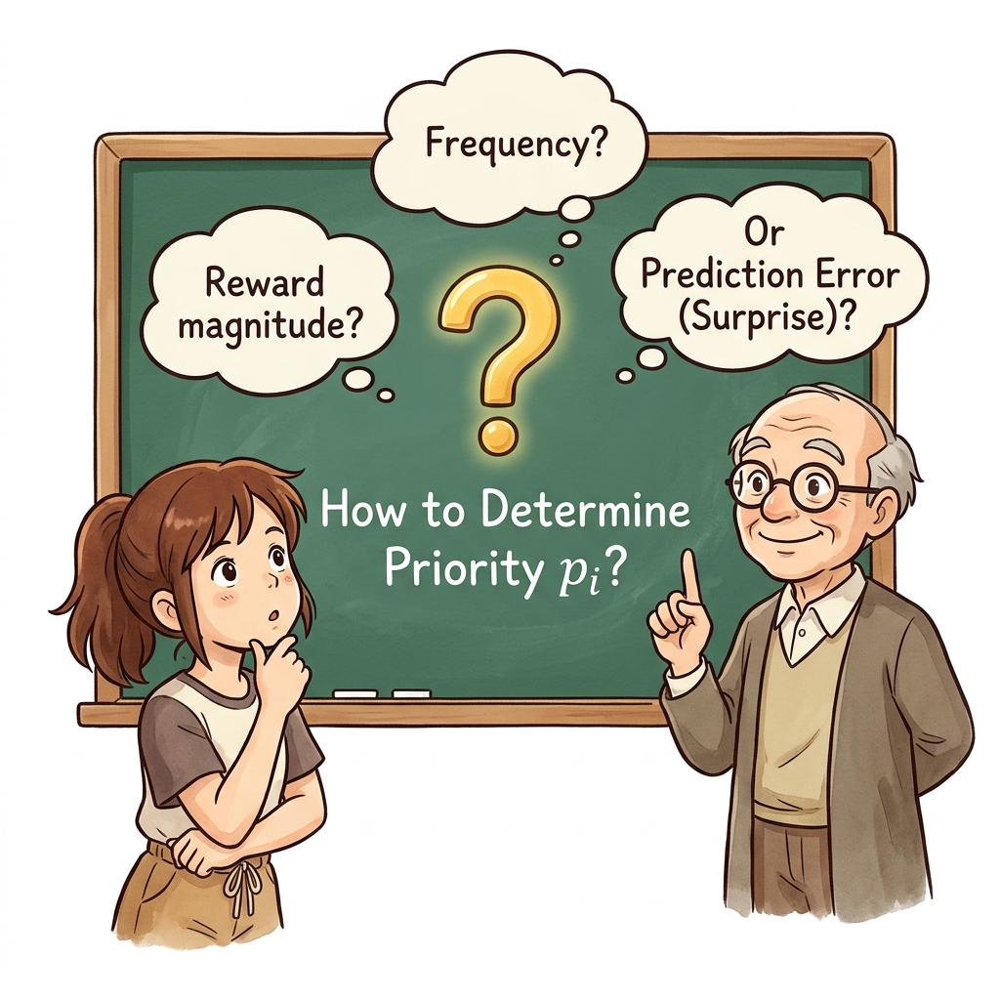
그림 12-4-14 핵심 질문: 경험 데이터의 우선순위는 도대체 어떤 기준으로 정해야 할까?자연스럽게 떠올릴 수 있는 방식은 다음 공식입니다.
\[\delta_t = \left| R_t + \gamma \max_a Q_{\theta'}(S_{t+1}, a) - Q_{\theta}(S_t, A_t) \right|\]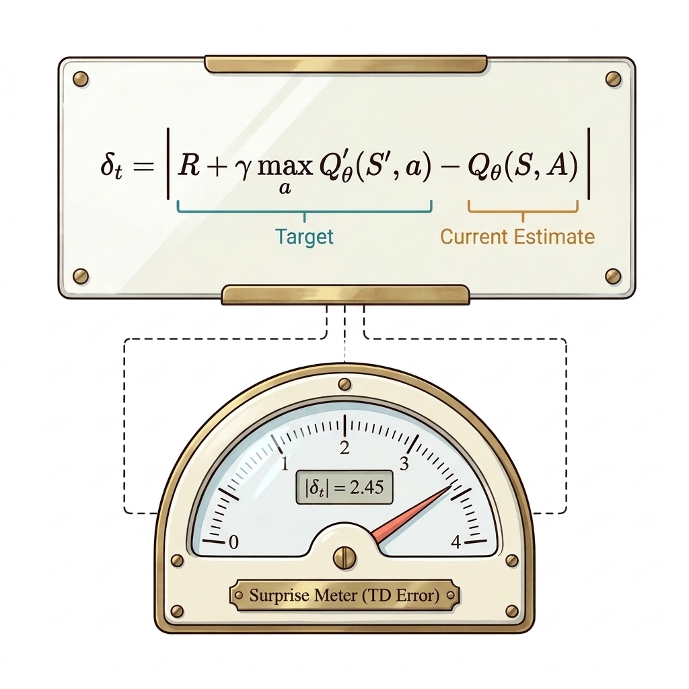
그림 12-4-15 TD 오차 절댓값 δ_t 공식: 예상치와 실제 목표 사이의 놀람도(Surprise) 측정 —이 식과 같이 TD 목표인 $R_t + \gamma \max_a Q_{\theta’}(S_{t+1}, a)$와 $Q_{\theta}(S_t, A_t)$의 차이를 구하여 그 절댓값을 $\delta_t$로 합니다($\delta$는 ‘델타’로 발음합니다).
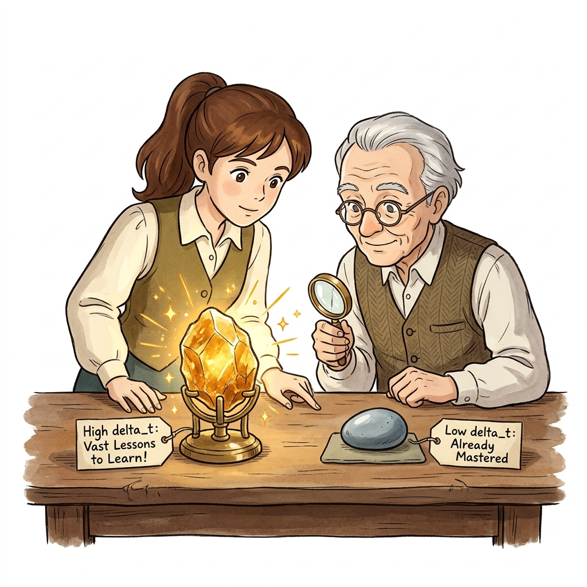
그림 12-4-16 δ_t 크기의 본질적 의미: 큰 오차(배울 게 많은 황금 원석) vs 작은 오차(이미 마스터) —이때 $\delta_t$가 크면 그만큼 수정할 것이 많다는, 즉 배워야 할 게 많다는 뜻입니다.
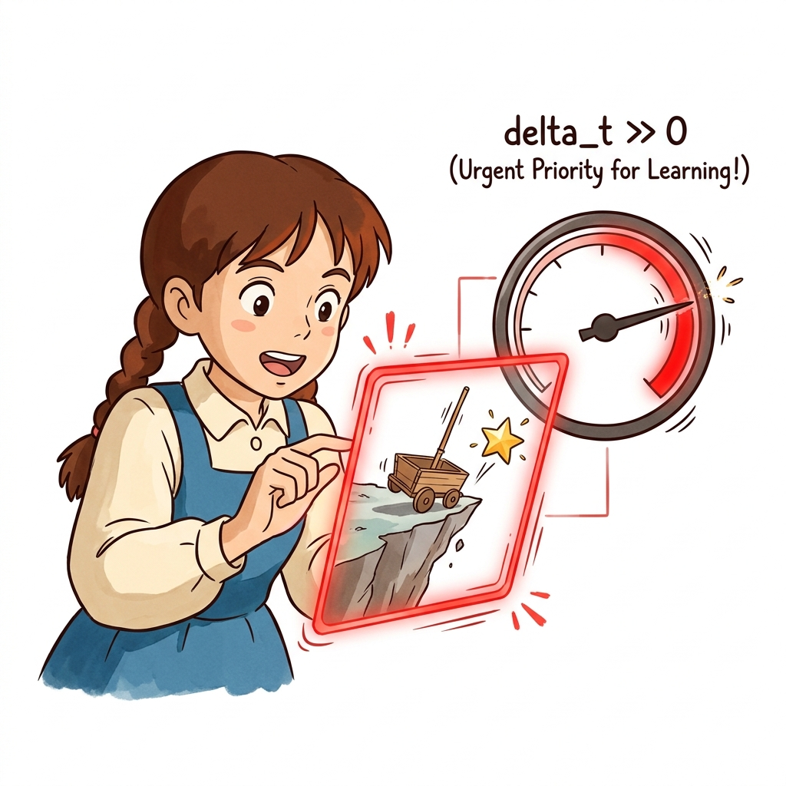
그림 12-4-17 높은 TD 오차 (High δ_t): 절벽 추락이나 돌발 고득점 등 에이전트에게 중요한 긴급 교훈 —반대로 $\delta_t$가 작으면 이미 좋은 매개변수이고 배울 것이 적다는 뜻입니다. 그림 12-4-18 낮은 TD 오차 (Low δ_t): 이미 충분히 익숙하여 가중치 수정이 거의 필요 없는 일상 데이터 —
우선순위 경험 재생에서는 $\delta_t$까지를 경험 데이터에 포함시켜 $(S_t, A_t, R_t, S_{t+1}, \delta_t)$를 버퍼에 추가합니다.
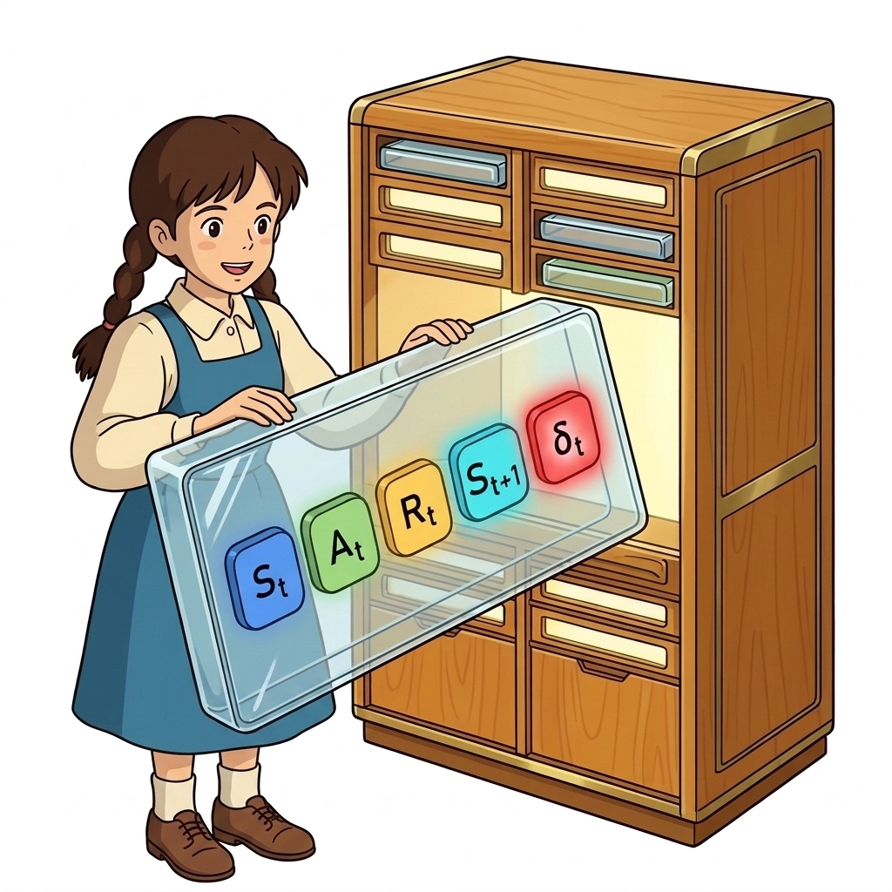
그림 12-4-19 오차 태그가 포함된 PER 5개 토큰 경험 카트리지: (S_t, A_t, R_t, S_{t+1}, δ_t) — 그런 다음 버퍼에서 경험 데이터를 꺼낼 때 $\delta_t$를 이용하여 각 경험 데이터가 선택될 확률을 구합니다. 그림 12-4-20 오차 비례 확률 룰렛 원판과 계산 공식: p_i = δ_i / Σ δ_k
—
예를 들어 버퍼에 담긴 경험 데이터가 $N$개라면, $i$번째 경험 데이터가 선택될 확률은 다음 식으로 표현됩니다.
\[p_i = \frac{\delta_i}{\sum_{k=1}^{N} \delta_k}\]
그림 12-4-20 오차 비례 확률 룰렛 원판과 계산 공식: p_i = δ_i / Σ δ_k
—
예를 들어 버퍼에 담긴 경험 데이터가 $N$개라면, $i$번째 경험 데이터가 선택될 확률은 다음 식으로 표현됩니다.
\[p_i = \frac{\delta_i}{\sum_{k=1}^{N} \delta_k}\]
이 확률 $p_i$에 따라 버퍼에서 경험 데이터를 추출합니다.
 그림 12-4-21 우선순위 확률 p_i에 따라 버퍼에서 배울 게 많은 황금 경험을 집중 추출
—
그림 12-4-21 우선순위 확률 p_i에 따라 버퍼에서 배울 게 많은 황금 경험을 집중 추출
—
우선순위 경험 재생을 사용하면 배울 게 많은 데이터일수록 우선적으로 사용되기 때문에 학습이 더 빨리 진행되리라 기대할 수 있습니다.
 그림 12-4-22 PER을 통한 학습 속도 초고속 가속: 중요 경험 집중 학습으로 수렴 시간 단축
—
그림 12-4-22 PER을 통한 학습 속도 초고속 가속: 중요 경험 집중 학습으로 수렴 시간 단축
—
12.4.3 Dueling DQN
마지막으로 Dueling DQN [15] 기법을 소개합니다. Dueling DQN은 신경망의 구조를 개선한 기법입니다.
 그림 12-4-23 신경망 구조 자체의 혁신: 상태 가치와 행동 이점을 분리한 Dueling DQN의 서막
—
이 기법에서 핵심은 어드밴티지 함수입니다. 어드밴티지 함수(advantage function)는 Q 함수와 가치 함수의 차이이며 수식으로는 다음과 같습니다.
그림 12-4-23 신경망 구조 자체의 혁신: 상태 가치와 행동 이점을 분리한 Dueling DQN의 서막
—
이 기법에서 핵심은 어드밴티지 함수입니다. 어드밴티지 함수(advantage function)는 Q 함수와 가치 함수의 차이이며 수식으로는 다음과 같습니다.
 그림 12-4-24 어드밴티지 함수 공식: A_π(s, a) = Q_π(s, a) - V_π(s) (식 12.1)
—
그림 12-4-24 어드밴티지 함수 공식: A_π(s, a) = Q_π(s, a) - V_π(s) (식 12.1)
—
[식 12.1]의 어드밴티지 함수는 $a$라는 행동이 정책 $\pi$에 따라 행동할 때보다 얼마나 좋은지(혹은 나쁜지)를 나타냅니다.
 그림 12-4-25 어드밴티지 함수의 물리적 의미: 행동 a가 정책 π보다 얼마나 더 이로운지/해로운지 측정
—
어떻게 이런 의미가 되는지는 오른쪽 두 항의 의미가 다음과 같음을 생각하면 어렵지 않게 이해될 것입니다.
그림 12-4-25 어드밴티지 함수의 물리적 의미: 행동 a가 정책 π보다 얼마나 더 이로운지/해로운지 측정
—
어떻게 이런 의미가 되는지는 오른쪽 두 항의 의미가 다음과 같음을 생각하면 어렵지 않게 이해될 것입니다.
- $Q_{\pi}(s, a)$: 상태 $s$에서 ‘특정 행동 $a$’를 취하고 그 이후에는 $\pi$에 따라 행동했을 때 얻을 수 있는 기대 수익
- $V_{\pi}(s)$: 상태 $s$에서 이후의 모든 행동을 정책 $\pi$에 따라 했을 때 얻을 수 있는 기대 수익
 그림 12-4-26 Q_π(s, a)와 V_π(s)의 개념적 차이: 특정 행동을 취하는 길 vs 정책에 따르는 길
—
그림 12-4-26 Q_π(s, a)와 V_π(s)의 개념적 차이: 특정 행동을 취하는 길 vs 정책에 따르는 길
—
즉 $Q_{\pi}(s, a)$와 $V_{\pi}(s)$의 차이는 상태 $s$에서 행동 $a$를 할 것인가, 아니면 정책 $\pi$에 따라 행동할 것인가의 차이입니다.
 그림 12-4-27 상태 s에서 특정 행동 a를 할 것인가, 아니면 정책 π에 맡길 것인가의 차이
그림 12-4-27 상태 s에서 특정 행동 a를 할 것인가, 아니면 정책 π에 맡길 것인가의 차이
다시 말해 어드밴티지 함수는 ‘$a$라는 행동이’ ‘정책 $\pi$에 따라 선택되는 행동’보다 얼마나 이로운지를 나타내는 지표로 해석할 수 있습니다.
 그림 12-4-28 어드밴티지 부호 해석: A > 0(초록 엄지척 - 훌륭한 선택) vs A < 0(빨간 경고 - 악수)
그림 12-4-28 어드밴티지 부호 해석: A > 0(초록 엄지척 - 훌륭한 선택) vs A < 0(빨간 경고 - 악수)
또한 어드밴티지 함수를 다음과 같이 변형하면 Q 함수를 구할 수 있습니다.
\[Q_{\pi}(s, a) = A_{\pi}(s, a) + V_{\pi}(s) \tag{식 12.2}\] 그림 12-4-29 어드밴티지와 가치 함수의 결합: Q_π(s, a) = V_π(s) + A_π(s, a) (식 12.2)
그림 12-4-29 어드밴티지와 가치 함수의 결합: Q_π(s, a) = V_π(s) + A_π(s, a) (식 12.2)
Dueling DQN은 [식 12.2]를 신경망으로 표현하는데, 그 구조는 [그림 12-13]과 같습니다.
그림 12-13 DQN(위)과 Dueling DQN(아래) 비교*
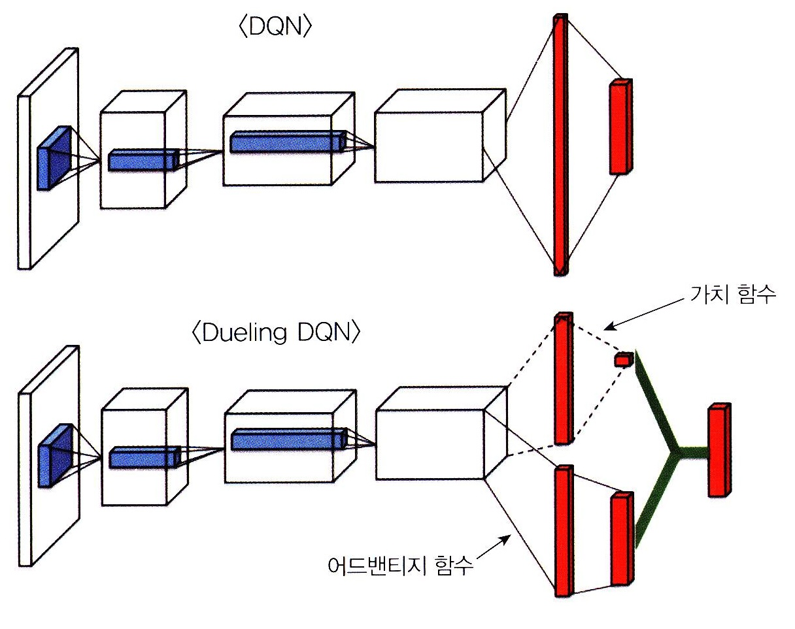
〈DQN〉 〈Dueling DQN〉 - 가치 함수, 어드밴티지 함수
* 그림 출처: Wang, Ziyu, et al. “Dueling network architectures for deep reinforcement learning.” International conference on machine learning. PMLR, 2016.
그림과 같이 중간까지는 똑같이 진행하다가 Dueling DQN에서는 어드밴티지 함수 $A(s, a)$와 가치 함수 $V(s)$로 분기합니다. 그리고 마지막으로 두 분기를 다시 합쳐 $Q(s, a)$를 출력합니다. 이 구조가 Dueling DQN의 특징입니다.
 그림 12-4-30 Dueling DQN 아키텍처: 공통 특징층에서 V(s)와 A(s, a)로 분기 후 재결합
그림 12-4-30 Dueling DQN 아키텍처: 공통 특징층에서 V(s)와 A(s, a)로 분기 후 재결합
그렇다면 어드밴티지 함수와 가치 함수를 분기하여 학습하면 어떤 점이 좋아질까요? 주로 무슨 행동을 선택해도 결과가 달라지지 않는 상황에서는 이점이 생깁니다.
 그림 12-4-31 왜 분기하는가? 무슨 행동을 해도 결과가 달라지지 않는 상황에서의 압도적 이점
그림 12-4-31 왜 분기하는가? 무슨 행동을 해도 결과가 달라지지 않는 상황에서의 압도적 이점
예를 들어 〈퐁〉 게임을 플레이하다가 [그림 12-14]와 같은 상황이 되었다고 상상해봅시다.
그림 12-14 공이 플레이어 진영에 진입하기 직전의 화면
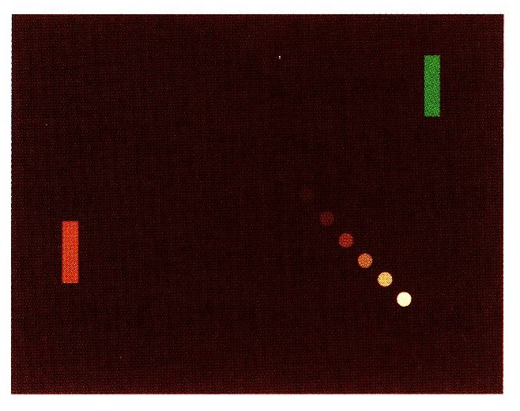
이 상황에서는 어떤 행동을 해도 결과는 패배(마이너스 보상)입니다. DQN의 경우 어떤 상태 $s$에서 실제로 한 행동 $a$에 대해 $Q(s, a)$를 학습합니다.
 그림 12-4-32 불가피한 실점 상황에서 기존 DQN의 한계: 모든 행동을 다 해봐야만 학습 가능
그림 12-4-32 불가피한 실점 상황에서 기존 DQN의 한계: 모든 행동을 다 해봐야만 학습 가능
그런데 지금의 예처럼 결과가 확정된 상황이라도 모든 행동을 시도해보지 않으면 $Q(s, a)$가 학습되지 않습니다. 반면 Dueling DQN은 한쪽 분기에서 가치 함수 $V(s)$를 경유합니다.
 그림 12-4-33 Dueling DQN의 번개 같은 깨달음: 상태 가치 V(s) 하나만 배워도 모든 행동 Q값 즉각 갱신
그림 12-4-33 Dueling DQN의 번개 같은 깨달음: 상태 가치 V(s) 하나만 배워도 모든 행동 Q값 즉각 갱신
가치 함수는 어떤 상태 $s$에서의 가치로, 행동은 전혀 고려하지 않지요. 따라서 이 그림의 상태를 경험하면 $V(s)$가 학습되어 다른 행동을 시도하지 않아도 $Q(s, a)$의 근사 성능이 좋아집니다. 이런 특성 덕분에 학습이 빨라지리라 기대할 수 있습니다.
 그림 12-4-34 행동 시도 낭비 없이 상태 자체의 가치를 빠르게 학습하여 수렴 속도 극대화
그림 12-4-34 행동 시도 낭비 없이 상태 자체의 가치를 빠르게 학습하여 수렴 속도 극대화
이상으로 DQN의 확장 기법 세 가지를 소개했습니다. 참고로 14.3절에서는 DQN을 기반으로 한 더욱 발전된 알고리즘을 몇 가지 더 소개합니다.
 그림 12-4-35 12장 DQN 확장 대단원과 6대 핵심 기술이 통합될 14장 Rainbow DQN 예고
그림 12-4-35 12장 DQN 확장 대단원과 6대 핵심 기술이 통합될 14장 Rainbow DQN 예고